PRISM：用多重视角恢复序列推荐中被忽略的物品关系
论文 From Overlooked to Explored: Recovering Item Relations via Mixture of Perspectives for Sequential Recommendation 由浦项科技大学的 Junyoung Kim、Woojoo Kim、Jaehyung Lim、Dongha Kim、Hwanjo Yu 与伊利诺伊大学厄巴纳-香槟分校的 Wonbin Kweon 合作完成，已进入 CIKM 2026 full research papers track。本文把问题落在一个很具体的机制上：序列推荐常用自注意力建模物品关系，但点积相似度并不等于对下一物品预测的因果重要性。论文入口为 arXiv:2608.11846，作者已公开核验过的 PRISM 代码仓库。
序列推荐依赖物品之间的关系来恢复用户偏好，但点积注意力会系统性偏向相似物品，把对目标预测有意义的异质关系压到低权重；因此模型看到的只是偏好的局部切面，而不是交互序列中完整的关系证据。
1. 背景和问题
1.1 点积相似度为何可能错过真正有用的关系
序列推荐的标准任务是：给定用户按时间排列的交互序列 $S_u=[v_1,v_2,\ldots,v_{|S_u|}]$，预测下一物品。Transformer 的优势在于让当前查询位置与所有历史位置发生两两交互；但它的注意力 logit 主要来自查询与键的点积 $QK^\top/\sqrt{d_k}$。若两个物品在现有表示空间中相似，它们天然容易获得较高分；表示上较远的物品即使携带“补充性偏好”，也可能被 softmax 进一步压低。论文把这种结构性倾向称为 similarity bias。它不是说相似关系没有用，而是指出“只看相似”会把用户跨类别、跨语义群组的转移线索当成噪声。
以论文的运动鞋序列为例，裤子与鞋在表示空间中接近，因此标准注意力很容易抽出时尚偏好；水壶、足球、手表与鞋不够相似，却可能分别指向运动、收藏等另一些偏好。若这些关系长期保持低权重，最终的序列表示就会把多面用户压成单一兴趣。PRISM 的出发点不是取消相似性，而是让同一段历史被多个关系视角重新审视：一个视角细化鞋与裤子的同质联系，另一个视角主动显露鞋与水壶、足球之间的异质联系，再把不同视角组合回完整用户表示。
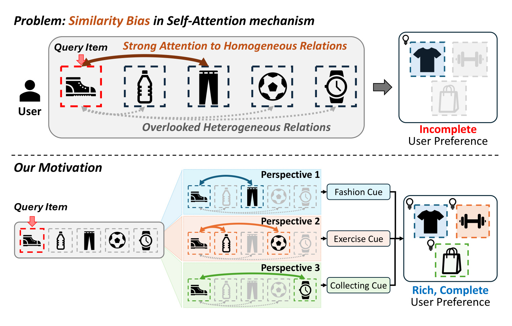
Figure 1 上半部分把问题画得很克制：查询物品是运动鞋，点积注意力把高权重集中到同质的裤子上，水壶、足球与手表被放在“overlooked heterogeneous relations”区域，因而只得到不完整偏好。下半部分不是把所有低相似关系一概抬高，而是由三个 Perspective Lens 分别抽出 Fashion、Exercise、Collecting cue，再形成更丰富的用户偏好。这里最重要的区别是“视角选择”而非“平均补偿”：如果只是把所有低权重位置统一加分，噪声也会一起进入；多视角机制需要先判断物品的语义组成，再决定某个 lens 看哪些 key，以及这些关系在当前 query 下属于 Affinity 还是 Contrast。
1.2 用因果重要性检验注意力是否真的看对了位置
“注意力权重小”本身不能证明该位置重要。作者因此用遮蔽反事实定义位置 $j$ 的因果重要性：保持模型和其他物品不变，只遮蔽该位置，观察真实下一物品 $y$ 的预测概率下降多少。
符号解释： $S_u$ 是用户历史序列，$y$ 是真实目标物品，$\operatorname{mask}(S_u,j)$ 表示遮蔽第 $j$ 个历史物品后的序列，$I_j$ 是该位置对目标置信度的边际贡献。$I_j$ 越大，说明遮掉它越伤害预测；这一指标不要求该位置原先获得高注意力，因此可以作为检查 attention 是否“看对地方”的独立参照。作者在 Toys 与 Beauty 各取 1,000 个测试序列，比较最后一层、跨 head 平均的注意力与 $I_j$ 的排序关系，并报告 Spearman 相关系数 $\rho(A,I)$ 和最高注意位置是否等于最重要位置的 Align@1。
作者还设计四种直接修改最后一层注意力 logit 的反事实干预：C1 提升注意力最高的 20% 位置，C2 随机提升 20%，C3 提升注意力最低的 20%，C4 则只从低注意位置中选因果重要性位于前 50% 的位置；提升强度 $\beta_{boost}=5.0$，结果用目标概率的相对变化 $100(P_{modified}-P_{original})/P_{original}$ 衡量。这一设计把两个问题拆开：低注意位置是否仍有用，以及其中真正有用的位置是否分布在多种关系侧面。
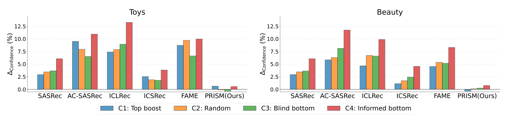
Figure 2 显示，在 SASRec、AC-SASRec、ICLRec、ICSRec 与 FAME 上，四类干预大多都能提高目标置信度，甚至随机重分配 C2 也有明显收益。这不是“随机方法很好”，而是说明原始注意力离因果重要性尚有距离，以至于轻微打乱也可能改善预测。更关键的是 C3 在 Toys 与 Beauty 上均为正：当前被压在底部的位置并非无用；C4 又通常高于 C3，说明低权重位置之间确有质量差异，应该找出被忽略但有因果贡献的关系，而不是无差别补偿。PRISM 的柱几乎贴近零或转负，则是后文的回访证据：其注意力已吸收这些位置，再扰动反而破坏有效关系。两数据集的相同方向也削弱了结果只由某个类别分布偶然造成的可能性，但干预只发生在最后一层，不能代表所有中间层都具有同样错配。
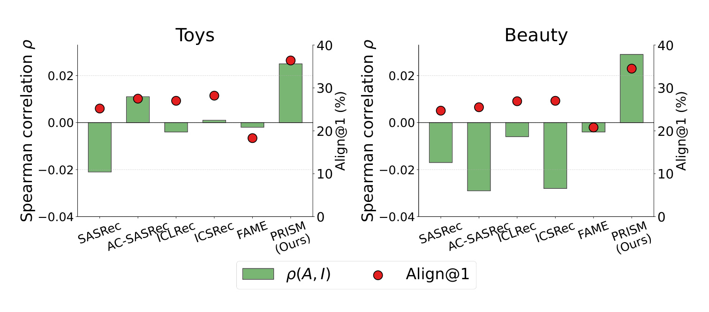
Figure 3 从排序层面补上另一条证据。SASRec 在两个数据集上的 $\rho(A,I)$ 都为负，意味着更受关注的位置并不更具因果贡献；AC-SASRec 虽校准注意力，在 Beauty 上相关性反而更差。ICLRec、ICSRec 的序列级 intent 与 FAME 的 head 内 MoE 也没有消除错位，因为它们仍未改变每个 head 内以点积相似度选 key 的基本机制。PRISM 同时提高相关系数与 Align@1，但图中数值仍不代表 attention 可直接解释成因果：遮蔽会改变上下文，相关与命中率也只是有限诊断。更稳妥的结论是，论文证明了基线存在可被干预利用的系统性错配，并把“恢复异质关系”变成可以被后续消融检验的机制假设。
2. 方法
PRISM 插在相邻 Transformer 层之间：一个 $L$ 层骨干放置 $L-1$ 个 PRISM 模块。上一层给出逐物品表示与注意力 logit，模块先以 Semantic Anchor Router 估计每个物品对 $K$ 个语义群组的软归属，再让 $K$ 个 Perspective Lens 以各自群组为焦点重校准同一张注意力图；最后按物品自身的语义组成融合 lens 输出，并送入下一层。训练端再加入序列级偏好对比损失与跨 lens 一致性损失。关键设计是所有 lens 共享可学习投影，差异只来自关系视角；因此增益不能简单归因为复制出更多独立专家参数。
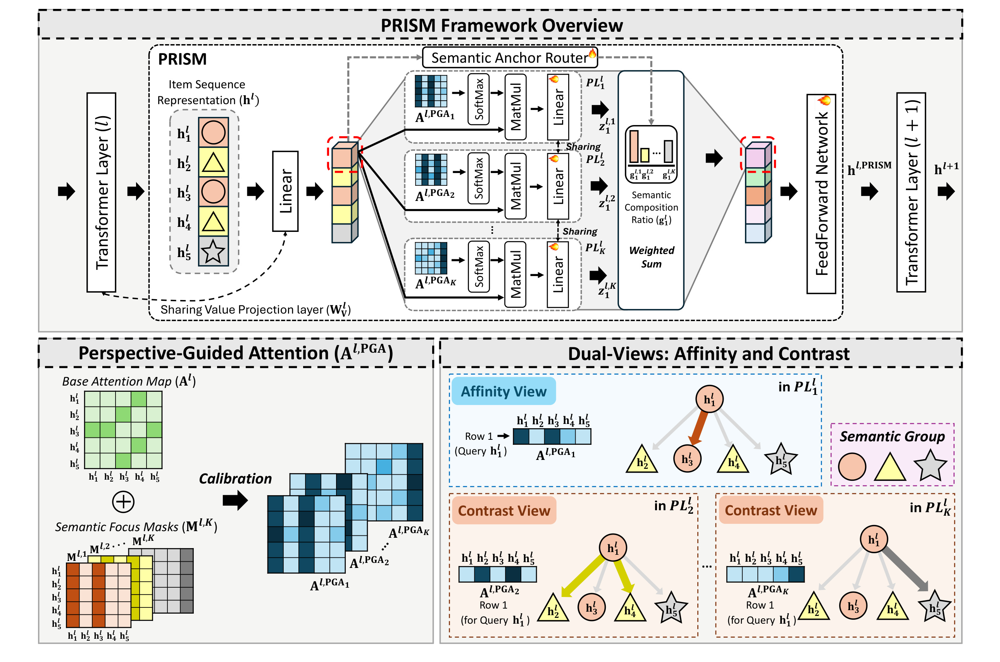
Figure 4 应沿着上半部分从左向右读：第 $l$ 层 Transformer 产生序列表示 $H^l$；Semantic Anchor Router 为每个位置给出 $K$ 维 Semantic Composition Ratio，并据此形成 $K$ 个透镜；透镜复用上一层的 base attention map 与 value projection，只用不同的 Semantic Focus Mask 得到不同的 Perspective-Guided Attention。右侧再以 $g_i^{l,k}$ 对各 lens 输出加权求和，经 FFN 得到 $H^{l,PRISM}$，送给第 $l+1$ 层。下半部分放大了同一机制：当 query 的主锚点等于 lens 群组时是 Affinity View，强化组内关系；不相等时是 Contrast View，读取跨组关系。因每个物品恰有一个 PSA，它必然经历一次 Affinity 与 $K-1$ 次 Contrast，而不是由一个离散 router 只选一个专家。
2.1 Semantic Anchor Router：从物品表示得到语义组成与主锚点
路由器输入第 $l$ 层第 $i$ 个位置的表示 $h_i^l\in\mathbb R^d$，分别通过语义门控矩阵与噪声尺度矩阵生成 $K$ 维 logit。训练时加入高斯噪声，让物品在早期有机会探索不同透镜；推理时去掉噪声，得到确定路由。随后 softmax 保留“一个物品可同时含有多个语义侧面”的软组成，argmax 只提取构造 mask 所需的 Primary Semantic Anchor。
符号解释： $W_g^l,W_{noise}^l\in\mathbb R^{d\times K}$ 是第 $l$ 层的可学习门控与噪声矩阵，$\eta_i^l\sim\mathcal N(0,I_K)$ 是训练期噪声，$\odot$ 表示逐元素乘法；$r_i^l$ 是路由 logit，$g_i^{l,k}$ 是物品 $i$ 属于第 $k$ 个语义群组的连续比例，$PSA_i^l$ 是最大比例对应的离散锚点。softplus 保证噪声尺度非负。需要注意，PSA 未受类别名称监督，论文中的 Electronics、Travel 只是解释例子；真实群组是端到端学得的潜变量，不能直接当作人工可读 taxonomy。
2.2 Mixture of Perspective Lenses：语义聚焦、关系增强与双视角
第 $k$ 个 lens 先依据所有 key 的 PSA 构造二值 Semantic Focus Mask。mask 的每一列由 key 位置 $j$ 是否属于群组 $k$ 决定，并对所有 query 共享；因此它表达的是“从群组 $k$ 这个视角看整段序列”，不是为每个 query 单独聚类。该 lens 计算 query 对组内 key 的平均原始 attention logit，再把这个均值只广播回同组 key，得到关系增强信号。
符号解释： $M^{l,k}\in{0,1}^{T\times T}$ 是第 $k$ 个 lens 的语义聚焦 mask，$\mathbb I(\cdot)$ 为指示函数，$A^l$ 是上一 Transformer 层的未归一化注意力 logit，$T$ 为序列长度，$S_{ij}^{l,k}$ 是 query $i$ 在群组 $k$ 视角下给 key $j$ 的增强量。外侧的 $M_{ij}^{l,k}$ 保证只有该群组的 key 收到信号；均值分母固定为 $T$ 而非组内数量，意味着群组规模也会影响增强幅度，这是复现时应核对的细节。
关系信号通过可学习标量 $\beta^l$ 控制强度，并经过指数变换后加到原 logit 上。指数保证补偿非负，所以 PRISM 的动作是“让被某个视角选中的关系更可见”，而非直接惩罚其他关系；softmax 之后其他位置仍会因归一化发生相对下降。校准后的 logit 与共享 value projection 产生该 lens 的表示，所有 lens 复用 $\beta^l$、线性层和 $W_v^l$，避免把不同结果混同于不同参数集合。
符号解释： $A^{l,PGA_k}$ 是第 $k$ 个透镜的 Perspective-Guided Attention logit，$\beta^l$ 是该层共享的增强尺度，$V'^l$ 是由输入表示 $H^l$ 得到的共享 value，$Z^{l,k}=[z_1^{l,k},\ldots,z_T^{l,k}]$ 是透镜输出。若 query 的 $PSA_i^l=k$，该透镜强化同组关系，形成 Affinity View；若 $PSA_i^l\neq k$，它让 query 主群组之外的 key 获得可见性，形成 Contrast View。由于增强只加不减且依赖硬 PSA，错误路由可能放大错误群组；这也是 $K$、噪声门控与一致性损失必须共同验证的边界。
2.3 Relational Insight Synthesis：按语义组成融合并接回 Transformer
得到 $K$ 份 lens 表示后，PRISM 没有再训练一个独立 gate，而是复用 Router 的软组成 $g_i^{l,k}$ 对同一物品的多视角结果加权。这一步保留“主锚点之外仍有次级语义”的信息：PSA 用于决定每个 lens 看哪些 key，连续比例则决定各视角回到最终表示时的贡献。加权和经过 FFN 后作为下一 Transformer 层输入；最后一层序列表示 $h_u$ 与物品嵌入表 $E$ 做全物品打分。
符号解释： $z_i^{l,k}$ 是第 $k$ 个 lens 对位置 $i$ 的输出，$g_i^{l,k}$ 是该物品的语义组成权重，$h_i^{l,PRISM}$ 是统一的关系表示，$h_u$ 是最后一个预测位置在末层的序列表示，$E\in\mathbb R^{|\mathcal V|\times d}$ 是共享物品嵌入表，$\hat y_u$ 是所有候选物品上的概率分布。训练与推理都保留这条融合路径；差别只在训练时还计算后述辅助损失，而推理不需要同目标样本对或额外聚类。
2.4 Training Objectives：序列偏好对齐与跨透镜协同
物品级关系视角仍可能缺少序列级共同目标。LSPCL 为每条训练序列检索另一条具有相同下一物品的序列作为正样本，但直接对齐会把两条序列的所有透镜关系都拉近，使不同路径到达同一目标的用户失去差异。Stochastic Perspective Masking 因此始终保留物品的 PSA lens，只以概率 $\rho$ 遮蔽非主透镜，再通过 log-mask 把被遮项在 softmax 后压到接近零。这样，同目标序列主要共享主语义，非主关系仍保留随机差异。
符号解释： $m_i^{l,k}$ 是第 $l$ 层物品 $i$ 对透镜 $k$ 的二值遮蔽变量，$\rho$ 是 perspective dropout rate，论文固定为 0.25；$\tilde r_i^l$ 是遮蔽后的路由 logit，$\epsilon$ 防止 $\log 0$。主锚点恒为 1，非主锚点以 $1-\rho$ 的概率保留。遮蔽只用于训练 LSPCL 的表示路径；推理使用完整路由，因此它是防止对比学习过度对齐的正则，而不是线上随机化。
符号解释： $\tilde h_a$ 是遮蔽后 anchor 序列表示，$\tilde h_p$ 是同目标正样本，$\tilde h_b$ 是批内第 $b$ 个候选，$B$ 为 batch size，$\operatorname{sim}$ 使用点积，$\tau$ 是温度。这个损失把相同目标代表的序列级偏好拉近；SPM 限制被对齐的关系范围，使“目标相同”不被误解成“历史中的所有透镜组成相同”。
不同 lens 虽应关注不同 key 子集，却都要在同一物品空间里产生可融合的含义。LCCL 先让每个 $z_i^{l,k}$ 对采样物品嵌入 $E_{sample}$ 产生概率分布，再最小化 lens 两两之间的对称 KL；pair 权重由两个 lens 在该物品上的组成比例共同决定，任一 lens 激活很弱时权重就小，避免把所有视角强行压成同一个输出。
符号解释： $p_i^{l,k}$ 是 lens 输出在 $N$ 个采样物品上的分布，$\operatorname{SKL}(p,q)=\frac12[KL(p|q)+KL(q|p)]$，$w_i^{l,k,k'}$ 是第 $k,k'$ 对 lens 的自适应权重，$L-1$ 是 PRISM 模块数。分布空间一致性使加权和不至于混合彼此不兼容的坐标系；但权重只在两个 lens 都有较高 $g$ 时变大，保留其关注关系的差异。论文用 batch 内目标物品充当 $E_{sample}$，这会让一致性质量依赖 batch 覆盖。
符号解释： $y_u$ 是真实下一物品的 one-hot 向量，$\mathcal L_{rec}$ 是全物品交叉熵，$\mathcal L_{aux}$ 合并序列偏好对比与跨 lens 一致性，$\lambda$ 控制辅助项强度。训练同时更新 Transformer、Router 与 PRISM；推理仅执行 Router、$K$ 个共享参数的 lens、融合与排序，不计算三个损失。由此可见，PRISM 的成本主要来自按 $K$ 重复的注意力计算，而非辅助损失的线上开销。
3. 实验结果
3.1 七数据集上的主结果
实验覆盖 Amazon Toys、Beauty、Games、Sports、Electronics，MovieLens-1M 与 Yelp。用户数从 ML-1M 的 6,040 到 Electronics 的 192,403，物品数从 3,416 到 63,001；平均序列长度差异很大，ML-1M 为 165.5，其余多在 8.3-11.5，适合同时检验稀疏短序列、长历史与较大物品库。作者采用 leave-one-out：最后一次交互测试、倒数第二次验证，其余训练；不做负采样，报告全排序 H@5/10/20 与 N@5/10/20，五个随机种子取均值。骨干为 2 层、2 head、维度 64、最大长度 50，batch size 256，Adam 学习率 0.001，并在单张 RTX 3090 上训练。
基线分成五组：SASRec、BERT4Rec、GRU4Rec；校准注意力的 AC-SASRec；CL4SRec、DuoRec；ICLRec、IOCRec、ICSRec、ELCRec；以及 FAME、FamouSRec、STAR-Rec 三类 MoE 路线。这样的对照比较完整，因为 PRISM 同时声称超越注意力校准、序列 intent 与增加专家容量。主表中的每个最佳值都以配对 t 检验标出，阈值为 $p<0.05$，样本来自五个种子。
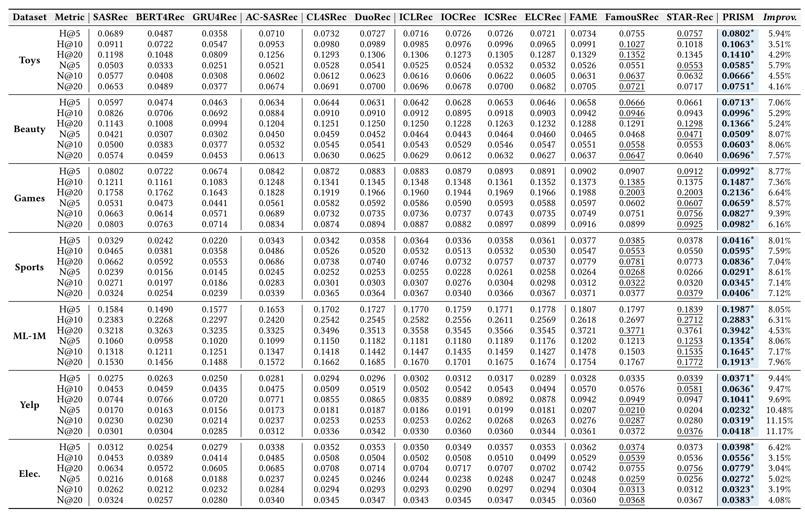
Table 2 的关键信息不是某一格最好，而是 PRISM 在 7 个数据集 × 6 个指标的 42 个比较中全部居首，并且每个星号项都达到论文设定的显著性。相对最强基线的提升从 Electronics N@20 的 3.04% 到 Yelp N@20 的 11.17%；Toys H@5 从 STAR-Rec 0.0757 升到 0.0802，Beauty N@10 从 0.0558 左右升到 0.0603，ML-1M N@20 从 0.1772 升到 0.1913。提升在不同稀疏度和长度上都出现，支持“关系恢复”具有跨域稳定性。不过这些仍是离线全排序结果；表中没有线上 CTR、留存或时延约束下的效果，不能据此推断业务增益。另一个值得核对的点是 BERT4Rec 在部分稀疏域明显弱于 SASRec，这说明基线实现和单向/双向训练设置也会影响相对差距；开源复现应先逐个对齐原论文搜索空间。
3.2 目标函数与双视角消融
训练目标消融在 Toys 与 ML-1M 上报告 H@20、N@20。完整 PRISM 分别达到 Toys 0.1410/0.0751、ML-1M 0.3942/0.1913。作者依次去掉 LSPCL、在 LSPCL 内取消 same-target 正样本、取消 SPM，以及去掉 LCCL，检查序列级对齐、过度对齐控制与 lens 可融合性。
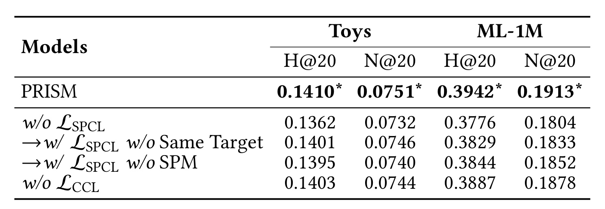
Table 3 中，完全移除 LSPCL 的下降最大：ML-1M N@20 从 0.1913 降至 0.1804，Toys H@20 从 0.1410 降至 0.1362，说明仅有 item-relation 视角不足以替代序列级共同目标。取消 same-target 后 ML-1M N@20 为 0.1833，取消 SPM 后为 0.1852；二者都好于完全无 LSPCL，却明显低于完整方案，符合“正样本要共享目标，同时避免所有关系一起塌缩”的设计。去掉 LCCL 的 ML-1M N@20 为 0.1878，降幅较小但一致，说明跨 lens 分布对齐是融合稳定器，而非主增益来源。消融只覆盖两个数据集，尚未证明每个辅助项在七个域上都同样必要；同时表中未给出各消融的方差，难以判断较小差距是否同样显著。
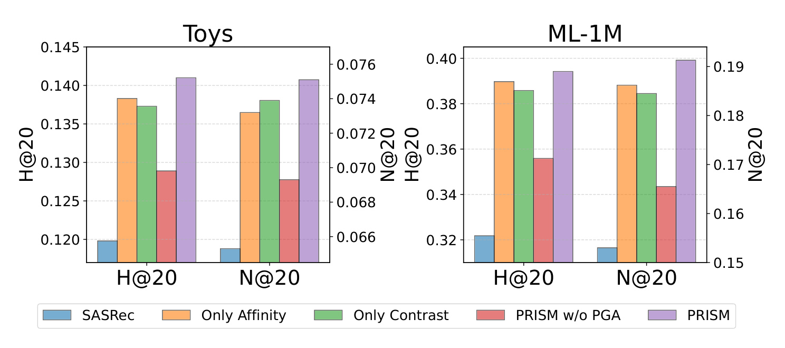
Figure 5 把架构贡献与损失贡献分开。Only Affinity 强制只保留物品自身 PSA lens，Only Contrast 只保留非 PSA lens；两者在 Toys 与 ML-1M 上都高于 SASRec，说明同质关系细化与异质关系恢复分别有用，而完整 PRISM 最高，支持二者互补。更关键的是 PRISM w/o PGA：它保留相同参数量，却去掉 Eq. 9 的关系增强信号，在两组指标上低于单视角变体。这个容量控制反驳了“只是多一层线性网络”的简单解释。图中仍无法独立判断硬 PSA、非负指数增强或组成加权哪个细节最关键，后续需要更细粒度的 mask 与 boost 形式消融。两种单视角之间的差距还随数据集和指标变化，意味着同质与异质关系的价值依赖序列分布，线上不能预设固定比例。
3.3 桥接物品与低相似目标
为验证异质关系不是抽象聚类现象，作者在 ML-1M 选了两条真实用户历史。目标物品同时含主流 genre $G1$ 与较少出现的 $G6$ 或 $G9$；序列中某个多 genre 的 Bridge Item 携带这个少数 genre，却与周围主流物品不相似。如果模型只汇总主导 genre，目标就会排得很后。实验遮蔽该 Bridge Item，并比较目标 rank 与置信度下降。
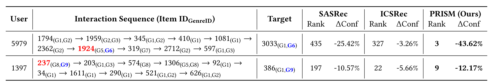
Table 4 的用户 5979 中，SASRec 把目标排到 435，ICSRec 排 327，PRISM 排 3；遮蔽带 $G6$ 的桥接物品后，PRISM 目标置信度下降 43.62%，而 ICSRec 只降 3.26%，说明后者几乎没有利用这条少数 genre 证据。用户 1397 上，三者 rank 分别为 197、22、9；PRISM 遮蔽下降 12.17%，仍高于另外两者。案例把“注意力看见异质关系”连接到最终排序，但样本只有两条，而且是作者挑选的可解释序列，证据强度低于总体统计；它适合说明机制怎样工作，不适合估计普遍收益。
作者进一步按序列与目标的表示相似度划分 Conventional Set 与 Novel Set：前者取最高 50%，目标偏好在历史表面较明显；后者取最低 20%，更依赖跨组桥接。这里最值得看的是绝对值和相对退化要一起读，避免只说 PRISM 在困难集领先。
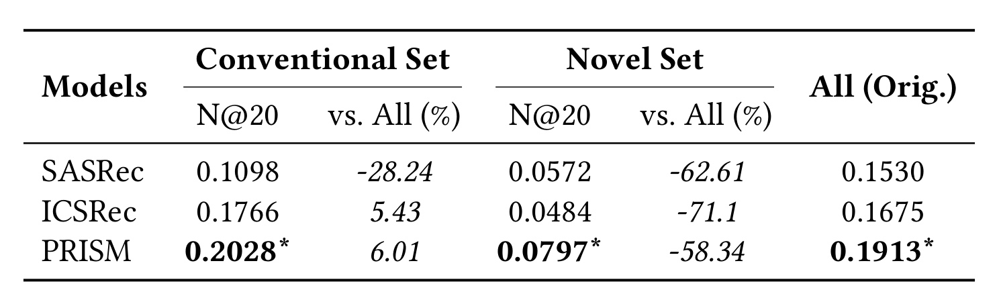
Table 5 中，Conventional Set 上 PRISM N@20 为 0.2028，高于 ICSRec 0.1766 与 SASRec 0.1098；Novel Set 上 PRISM 为 0.0797，高于 SASRec 0.0572 与 ICSRec 0.0484，尤其 ICSRec 的固定全局 intent 在低相似目标上退化更重。另一方面，PRISM 相对其全测试 N@20 0.1913 仍下降 58.34%，并没有“解决”新颖偏好；它只是把退化从 ICSRec 的 71.1% 缩小。这个结果与 Contrast View 的目标一致，也明确暴露剩余难点：当历史里根本不存在可桥接的证据时，多视角校准仍无从恢复目标。由于子集由当前表示的相似度定义，模型表征本身可能影响样本难度；最好再用独立内容标签或人工关系定义复核。
3.4 冷启动与长序列稳健性
短序列只有少量关系，任一跨组边都可能决定预测；长序列则会积累更多偏好侧面，固定 intent prototype 容易容量不足。作者在单次 5-core 处理的 Beauty 冷启动版本上按长度 $(0,5)$、$[5,10)$、$[10,50)$、$[50,\infty)$ 分桶，在 ML-1M 上按 $(0,50)$、$[50,150)$、$[150,300)$、$[300,\infty)$ 分桶。Beauty 此处的预处理与主表迭代 5-core 版本不同，因此不应把两处绝对数值直接横比。
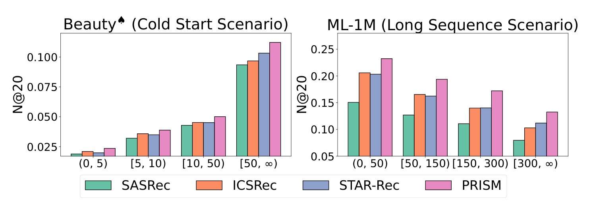
Figure 7 显示 PRISM 在所有长度桶上都高于 SASRec、ICSRec、STAR-Rec。论文报告极短序列 $T<5$ 时相对 ICSRec 提升 12.44%，表明少量关系里保留异质线索有价值；ML-1M 从 $T<50$ 到 $T\ge300$ 时，ICSRec 下降 50.02%，PRISM 下降 42.99%，作者将其解释为透镜组合空间随序列关系变化，而非受固定原型数限制。但长序列实验的骨干最大长度设为 50，论文没有在这张图旁充分解释截断或采样如何处理 $T\ge300$ 的原始历史；复现时必须确认预处理与模型实际输入长度，否则“长序列容量”可能混入截断策略影响。各桶样本量和置信区间也未展示，尾部超长桶的稳定性仍需原始日志确认。
3.5 成本、可扩展性与超参数
PRISM 复用上一层 $A^l$ 和 $W_v^l$，每增加一个 lens 只为 Router 多出门控与噪声列，作者给出的额外参数增长是每 lens $2d$；但计算仍需对 $K$ 个视角执行注意力与表示变换。理论上 PRISM layer 时间为 $O(T^2Kd+TKd^2)$、空间为 $O(K(T+d)^2)$，LSPCL 还在训练期引入带 batch 对比的主干计算，LCCL 复杂度与 $BTKNd$ 相关。因此“参数少”不等于“计算近乎免费”，要看训练、推理与显存的实测。
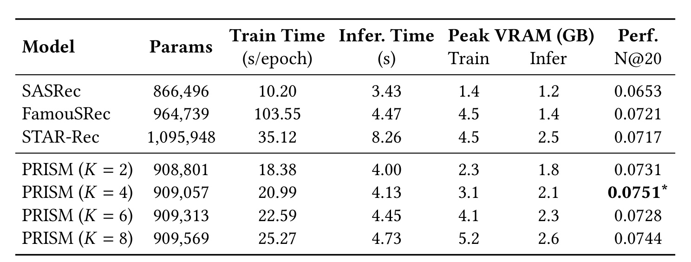
Table 6 给出清晰权衡：SASRec 为 866,496 参数、10.20 秒/epoch、3.43 秒推理、N@20 0.0653；PRISM 在 $K=2$ 时已达 0.0731，$K=4$ 最佳为 0.0751，对应 909,057 参数、20.99 秒/epoch、4.13 秒推理、训练/推理峰值显存 3.1/2.1 GB。$K$ 从 4 增至 6、8 并不单调提升，成本却持续上升。与 FamouSRec 相比，$K=4$ 参数更少、训练约快五倍，但相对 SASRec 训练约慢一倍、推理也更慢。工程选择应围绕吞吐预算寻找 $K$，而不是默认更多 lens 更好。这些秒数依赖单张 RTX 3090、实现版本与 batch 配置，跨硬件比较时应以相对倍率和峰值显存为主，不能把绝对时延直接当成服务 SLA。
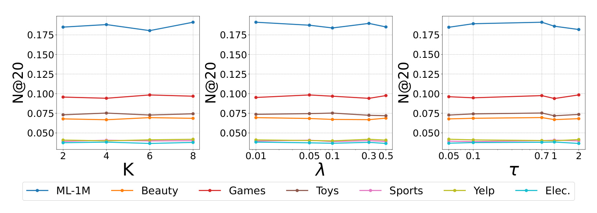
Figure 9 在七个数据集上分别改变 lens 数 $K$、辅助损失权重 $\lambda$ 与对比温度 $\tau$。整体曲线相对平缓，多数组合仍高于相应强基线，说明主结果不是单一点搜索偶然；但不同域的最优点不完全一致，$K=4$ 是 Toys 的资源/效果平衡，不是全域定律。$\lambda$ 太大可能让辅助对齐压过推荐目标，$\tau$ 太小则会放大批内相似度差异。论文搜索范围为 $K\in{2,4,6,8}$、$\lambda\in{0.01,0.05,0.1,0.3,0.5}$、$\tau\in{0.05,0.7,1.0,2.0}$；图能证明在这些离散点上相对稳健，不能外推到更大 $K$、更长输入或在线分布漂移。
4. 总结
4.1 我的判断
PRISM 最有价值之处，是把“注意力可能不可靠”收窄为可检验的序列推荐问题：点积相似性系统性压低异质物品关系，而这些低注意位置对目标预测确有因果贡献。论文先用遮蔽重要性与 logit 干预建立诊断，再用共享参数的多视角校准提出机制，最后用容量控制消融、困难子集、桥接案例和成本表回扣假设。证据链比单纯报榜更完整。与此同时，PRISM 的 attention 仍不应被等同于可解释因果图；它只是与遮蔽重要性更对齐，且在离线 ranking 上更好。
4.2 工程启发与复现建议
对推荐系统而言，这项工作提示 attention calibration 可以从“学习一张自由校准矩阵”转向“由关系分组约束的结构化校准”。候选排序或多兴趣用户建模中，可把 lens 理解为潜在关系通道：Affinity 维护稳定主兴趣，Contrast 给跨类转移、搭配购买或稀有意图留出通路。Router 的软组成也比一次性 hard expert routing 更适合一个物品多属性的场景。落地时应监控 PSA 负载、低权重关系的增益、$K$ 对时延的线性影响，以及长尾物品是否被噪声门控分到不稳定群组。
对个性化大模型也有一个可迁移的观察：检索到的记忆或工具证据不应只按与当前 query 的表面相似度排序，互补但低相似的关系可能决定最终答案。可借鉴的不是直接照搬 PRISM，而是“先以潜在视角组织证据，再联合保留同质与异质通道”的思路；迁移前仍需用遮蔽、替换或受控干预证明低相似证据确实改变目标输出，否则多视角只会增加计算与噪声。
4.3 局限与后续跟进
至少有四个边界需要保留。第一，所有结论来自七个公开离线数据集，没有线上 A/B、反馈回路或曝光偏差验证。第二，因果重要性基于单位置遮蔽，遮蔽 token 可能制造分布外上下文，不能等同于真实删除一次交互。第三，PSA 是无监督潜在分组，t-SNE 的分离只提供定性支持，群组是否稳定、可解释、公平尚未充分评估。第四，非负指数增强只能抬升选中关系，错误路由可能被放大；论文没有比较可正可负、归一化或连续 mask 的校准函数。第五，Table 6 表明训练相对 SASRec 明显变慢，且复杂度随 $K$ 线性增长，超长序列和超大候选库下的收益成本仍待验证。
后续复现应优先做三件事。其一，逐项复现 Figure 2-3 的遮蔽重要性与 C1-C4 干预，确认性能提升确实伴随 attention-causality 对齐，而不是预处理差异。其二，在相同参数量下比较硬 PSA、软 mask、可正可负 boost，并报告每个 lens 的负载熵与跨种子稳定性，定位真正必要的校准部件。其三，在真实 serving 约束下测 batch 推理、长序列截断、显存与吞吐，并按头部/长尾物品、活跃度与新颖目标分层；如果代码后续补充更多域、线上结果或新版消融，应重点跟进这些证据，而不是只看总表的平均提升。